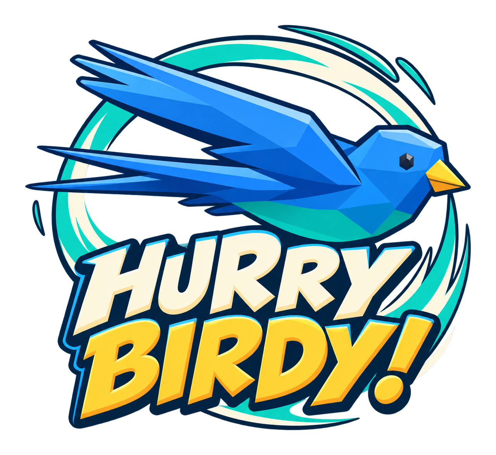

Quick flights, close calls and a personal best waiting to be beaten.
A little bird. A lot going on.The City has
The City has
other plans.
Storms roll in. Crosswinds push back. Cranes get in the way. Pick your bird, find the gap and take another shot at your best.
Preparing for iPhone and Android.
Free to play, with an optional one-time ad-free purchase.

Choose your favorite and head back into the sky.
Earn coins during runs and make your bird your own.
The game is in pre-release testing. Store download links will appear here when each platform is approved.